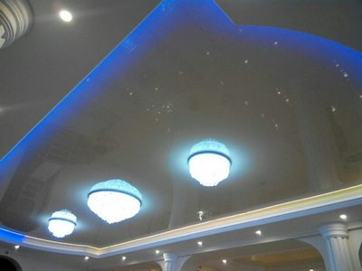
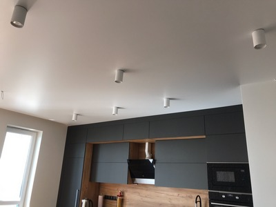
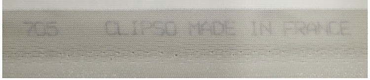
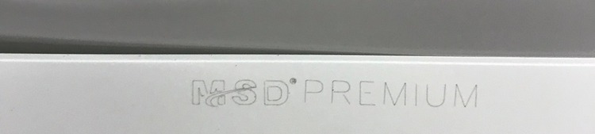

Натяжные потолки в Киеве – цены и ассортимент
Точной статистики нет, но по популярности натяжные потолки в Украине может быть уступают разве что тривиальным побеленным потолкам. Последние же распространены по причине предельной доступности, а у нас граждане, увы, высоким благосостоянием не отличаются.
Но если брать крупные города, например, Киев, то тут натяжной потолок вне конкуренции. Еще бы, ни один другой вид отделки верха помещения не может предоставить такое великолепное сочетание красивого внешнего вида, высоких эксплуатационных характеристик цены. Вот о последней мы сегодня и поговорим подробней. Вся информация будет основываться на многолетнем опыте нашей компании Nova Stelya, которая, без преувеличения является одним из лидеров по установке натяжных потолков в Киеве и области.
Цены на натяжные потолки в Киеве
| ✅ Потолок в коридор: | от 1800 грн. |
| ✅ Потолок на кухню: | от 3100 грн. |
| ✅ Потолок в спальню: | от 4400 грн. |
| ✅ Потолок в гостиную: | от 5000 грн. |
✴ Указанные цены являются ориентировочными и могут изменяться в зависимости от уровня сложности работ, количества расходных материалов и комплектующих. Для точного просчета Вы можете заказать БЕСПЛАТНЫЙ выезд технолога для замеров и консультации на объекте.

Мат, Глянец, Сатин
от 119 грн/м2

Бесщелевые
от 350 грн/м2

Теневые потолки
от 250 грн/м2

Парящие потолки
от 270 грн/м2

С нишей для штор
от 250 грн/м2

«Световые линии»
от 550 грн/м2
Тканевые потолки
от 700 грн/м2
С фотопечатью
от 650 грн/м2

Двухуровневые
от 700 грн/м2
Цены на комплектующие для натяжных потолков
| Материал | Цена |
| Профиль алюминиевый | 65 грн./м.п. |
| Профиль пластиковый | 40 грн./м.п. |
| Вставка | 30 грн./м.п. |
| Вставка цветная | 50 грн./м.п. |
| Угол потолка | 50 грн./шт. |
| Криволинейность потолка | 100 грн./м.п. |
| Центровка шва | 150 грн./м.п |
| Крепление Люстры / Светильников | 100 - 250 грн./шт. |
| Внутренний вырез | 100 грн./м.п |
| Монтаж бруса | 150 грн./м.п. |
От чего зависят цены на натяжные потолки
Вначале коротко о том, что, собственно говоря, представляет собой натяжной потолок. Это конструкция, включающая в себя:
- натяжное полотно (пленка ПВХ или синтетическая ткань);
- профиля для крепления полотна к стенам и крепежные элементы к ним;
- декоративные вставки.
- светотехнические устройства – точечные светильники света, светодиодные ленты и устройства для управления ими;
Соответственно, стоимость любого натяжного полотна состоит из стоимости вышеперечисленных материалов и устройств плюс стоимость монтажа. Рассмотрим эти составляющие подробнее.
Стоимость материалов и устройств
В большинстве натяжных потолков наибольшую стоимость имеет натяжное полотно. На его цену влияют следующие факторы:
- Площадь помещения
- Конструкция натяжного потолка (количество уровней, одно или многоцветное полотно)
- Материал натяжного полотна и его особенности
- Компания-изготовитель натяжного полотна
- Компания-установщик натяжного потолка.
Площадь помещения
Здесь все понятно. Чем больше площадь помещения, тем выше стоимость натяжного полотна. Ведь умножается цена одного квадратного метра на количество этих самых метров. Также от площади помещения зависит количество багетов для крепления полотна и крепежного элемента.

Конструкция натяжного потолка
Натяжные потолки бывают не только одноуровневые, но и многоуровневые. Тогда на цену натяжного потолка влияет количество уровней. Часто в многоуровневых потолках уровни не перекрываются. То есть, если в нижнем уровне делается вырез, чтобы был виден второй уровень, то его площадь равна площади выреза. Но это не означает, что суммарная цена полотен равна цене полотна, занимающего всю площадь.
Во-первых, для того, чтобы сделать натяжное полотно второго уровня нужной формы, его кроят из куска большой площади. И именно его площадь берут для расчета цены.
Во-вторых, для подсчета площади полотна нижнего уровня площадь выреза не учитывается (не вычитается).
В-третьих, за крой полотна берут определенную сумму.
Также цена натяжного полотна повышается, если оно составное. Пленочные полотна между собой можно сваривать, например, чтобы получить двух или многоцветные полотна. В этом случае берут цену полотна одного цвета (а его исходная площадь, как правило, больше, чем в итоге та, что будет привариваться), берут цену второго полотна и т.д. Плюс работа по их крою (обычно сваривают полотна, имеющие криволинейные контуры) и соединение в одно целое. Поэтому, например, двухцветное полотно будет минимум на 15-20% дороже такого же по площади одноцветного полотна (если свариваются два прямоугольных полотна, то стоимость повышается на 10%).
Материал натяжного полотна и его особенности

Все натяжные полотна делятся на два больших класса – тканевые, сделанные из искусственного полотна) и пленочные (из ПВХ пленки). Первые стоят минимум в два раза дороже вторых. А если тканевое полотно многослойное (например, бренд Cerutti предлагает и пятислойные натяжные тканевые полотна), то разница в цене становится еще больше.
Пленочные полотна тоже имеют свои особенности. Наиболее доступны матовые, глянцевые и сатиновые. Они имеют простую структуру и мало отличаются по цене (иногда, глянцевые из-за лакового слоя стоят дороже).
Но сейчас на рынке появились более интересные варианты. Есть пленочные полотна под замшу, кожу, натуральный камень (мрамор, опал), металлик, дерево. Они, разумеется, стоят дороже.
Также есть натяжные потолки со специфическими характеристиками. Например, антибактерицидные полотна (для медицинских учреждений), акустические (для ночных клубов, кинотеатров и т.д.), грязеотталкивающие. Все эти свойства увеличивают цену натяжного полотна.
Большая разница в цене между полотном с фотопечатью и без нее. Она колеблется в диапазоне 100-500 грн/м2. То есть, если полотно без фотопечати стоит, например, 200 грн/м2, то с фотопечатью, в зависимости от вида, выбранного рисунка – 300-800 грн/м2.
Наиболее дорогая фотопечать 3D рисунков. Попутно заметим, что компания Nova stelya предлагает индивидуальную фотопечать, то есть фотопечать вашего рисунка.
Пару слов скажем о багетах. Они бывают двух видов – пластиковые и алюминиевые. Вторые дороже, но прочнее и долговечнее. Для полотен большой площади (более 100 м2) применяются только они (для пластика слишком велики нагрузки).
Пластиковые багеты проще в монтаже они гибче, в них легче просверлить отверстия под шуруп. Но они менее долговечны и их качество сильно зависит от производителя.

Компания-изготовитель натяжного полотна
Не секрет, что имя бренда может прибавить до 30% к реальной цене продукта (а для Apple и того больше). Все это касается и натяжных потолков. На рынке натяжных потолков есть топовые бренды:
- Clipso, Descor (тканевые потолки);
- MSD Premium, LumFer, Teqtum и др. (пленочные потолки).
Их продукция самая дорогая. Затем идут бренды менее популярные и т.д. Наиболее доступны китайские натяжные потолки. Но здесь очень важен выбор компании-исполнителя. Потому что есть очень много экологически опасной китайской продукции. Уважающая себя компания не будет ее предлагать своим клиентам.
Компания-установщик натяжного потолка
Формирование цены у компании установщика происходит примерно следующим образом. Берется стоимость, за которую она заказывает натяжные потолки у компании-производителя или дилера. Учитываются накладные расходы (оплата штата работников, налоги, коммунальные, транспортные расходы и т.д.). Плюс прибыль.

Рассмотрим все эти слагаемые, применительно к нашей компании Nova stelya
- Стоимость материалов. Мы приобретаем натяжные потолки у компаний-изготовителей напрямую или через крупных дилеров. Благодаря большому объему заказов и многолетнему сотрудничеству нам делается большая скидка.
- Накладные расходы. Они у нас средние. Мы стараемся минимизировать непроизводственный штат компании, привязать оплату труда к объему и качеству работы. Расходы на офис определяются стоимостью аренды и коммунальных услуг. И они мало от нас зависят.
- Прибыль. Вначале, когда мы только начинали свою деятельность на рынке, наш прайс был ниже рыночного, чтобы завоевать популярность. Потом стоимость своих услуг мы повысили. Сейчас мы …снизили их вновь. Цель – увеличить объем заказов. Мы придерживаемся политики, что больше денег заработаешь на большом объеме работ, чем на высоких ценах за услуги.
Стоимость монтажа

Стоимость монтажа зависит от следующих факторов:
- Материала натяжного полотна.
- Площадь натяжного потолка.
- Конструкции натяжного потолка.
- Особенностей помещения – количество углов, стояков, наличие кондиционера, наличие криволинейных поверхностей.
Материал натяжного потолка
Тканевые и пленочные полотна имеют принципиальное отличие в монтаже – пленочные полотна перед непосредственной установкой необходимо нагреть до температуры 60-700С. Это делается строительным феном или тепловой пушкой. Оба работают на газе. Поэтому на объект необходимо доставлять газовые баллоны. Все это удорожает монтаж.
Пленочные натяжные потолки имеют два вида крепления:
- штапиковый (клиновой);
- гарпунный.
Первый способ значительно проще и дешевле. Полотно заводится в специальный паз в багете и там фиксируется штапиком (клином). Остатки полотна, которые выступили за фиксирующий элемент, обрезают. Потом паз снизу закрывают декоративной вставкой. В этом варианте не требуется высокая точность кроя. Все лишнее все равно обрезается.

Но есть и существенные минусы:
- Если полотно по каким-то причинам пришлось снять, установить назад его практически нереально – не за что взяться, чтобы зафиксировать край штапиком, все же лишнее отрезано.
- Большое влияние имеет человеческий фактор. Монтажник может с одной стороны больше завести полотна в паз, с другой меньше. В результате, если на полотне есть рисунок, он перекоситься. Если есть сварной шов – «поплывет». Кстати, есть такая услуга – центровка сварного шва. То есть компания без этой услуги не гарантирует, что шов у вас будет ровный.
Суть гарпунного метода – по периметру полотна приваривается специальная узкая лента с выступом в виде крючка (гарпуна) по краю. Этим гарпуном она цепляется за специальный выступ в багете. Сложность этого способа в том, что необходимо очень точно осуществить крой и затем приварить эту ленту. Размеры должны быть таковы, чтобы после нагрева полотна гарпун точно дотянулся до выступа на багете. Не дотянется − полотно вообще не будет закреплено. Перетянется – после остывания не будет обеспечен достаточный натяг. Полотно провиснет. Поэтому размеры кроя высчитываются при помощи специальной программы, а сам крой делается на специальном оборудовании. Этот вариант монтажа существенно дороже.
Но у этого способа есть огромные плюсы:
- Полотно можно многократно снимать и вновь устанавливать.
- Нет человеческого фактора. Все зависит от правильности кроя и приварки ленты – то и другое делается на специальном оборудовании.
Некоторые недобросовестные исполнители предлагают сравнительно низкие цены на установку натяжного потолка, умалчивая, что монтаж они будут делать штапиковым способом. Компания Nova stelya часто предлагает ту же цену но с гарпунным методом монтажа.
Также наши специалисты владеют более совершенной разновидностью гарпунного способа – бесщелевым. Его в суть в том, что устанавливается специальный багет, в который при помощи специального инструмента заводится край полотна. При этом нет никакого зазора между полотном и стеной. Поэтому нет необходимости в декоративной вставке и потолочном карнизе. Особенно этот способ показан при установке натяжных потолков с гипсокартонными декоративными вставками.

Цены на установку декоративной вставки и потолочного карниза:
- декоративная вставка обычная/цветная – 18/35 грн/м.п.;
- потолочный карниз – 70 грн/м.п.
Стоимость монтажа зависит и от выбранного заказчиком материала багета. Установка с алюминиевым багетом стоит дороже в среднем на 20 грн/м.п.
Площадь натяжного потолка
Чем больше площадь, тем больше понадобиться багетов для его крепления, тем больше необходимо просверлить отверстий для их крепления в стене.
Заметим, что эти два фактора – материал полотна (сюда же входит и способ монтажа) и площадь автоматически включаются в цену квадратного метра натяжного потолка. Поэтому, когда пишут, что цена натяжного потолка составляет, например, 180 грн/м2 и, допустим, площадь составляет 20 м2,то в цену 180 х 20 = 3600 грн. входит не только и материал, но и монтаж. Но без учета дополнительных факторов, о которых ниже.
Конструкции натяжного потолка

Выше мы писали, что в конструкцию натяжного потолка могут входить гипсокартонные вставки и светотехнические устройства. И то, и другое требует монтажа. Вставки необходимо прикрепить к стене или потолку, потом к ним прикрепить натяжное полотно. Такие элементы обычно применяются в многоуровневых конструкциях и в объемных натяжных потолках, когда полотно представляет собой не плоскость, а криволинейную поверхность, которая этими вставками и создается. Цена многоуровневого натяжного потолка в компании Nova stelya – от 350 грн/м2.
Очень трудоемок в монтаже натяжной потолок «Звездное небо». В нем необходимо закрепить специальное оборудование – светогенератор и отходящие от него пучки оптоволокна. Их концы крепятся с помощью листа фанеры, которую крепят за полотном. Также цена потолка «звездное небо» зависит от плотности оптоволокна на квадратный метр (в среднем плотность составляет 250 шт/м2), где непосредственно зафиксированы концы пучков – на самом полотне (в проколе) или за полотном. Наиболее дорогой вариант – в концах оптоволокна вставлены кристаллы Сваровски.
Светотехнические устройства могут крепиться непосредственно на полотне, в гипсокартонных вставках или в пазах специальных багетах. Так устанавливаются светодиодные ленты для «парящих потолков» и «парящих линий».
Поэтому такие потолки («Звёздное небо», парящие, многоуровневые, с массой подсветки) могут стоить в 2-3-4 раза дороже стандартных той же площади. Например, цена «Парящих линий» и «Парящего потолка» − от 350 грн/м2, «Звездного неба»− от 500 грн/м2.
Цены по установке осветительных приборов:
- одного точечного светильника − 60-100 грн/шт. (в зависимости от конструкции светильника и места его установки);
- люстры – 70-250 грн/шт (в зависимости от конструкции люстры);
- светодиодной ленты – 25-40 грн/пог. м.
Особенностей помещения
Обычно, в цену квадратного метра потолка входит его в монтаж в прямоугольном помещении с одним стояком. За все отклонения от этого стандарта необходимо доплачивать.
Приведем такие расценки нашей компании Nova stelya:
- обход стояка (свыше одного стояка) − 70 грн/шт.
- дополнительные углы − 40 грн./шт.
- кольцо для люстры − 100 грн/шт.
- монтаж бруса − 150 грн/м. п.
- криволинейный участок 75-100 грн./м.п.
- обход вентиляционной вытяжки – 100 грн/шт.
- обход кондиционера – 80-120 грн/шт. (в зависимости от кондиционера)
За более подробной информацией обращайтесь к нашим специалистам. Они, исходя из объективных данных по вашему помещению и ваших пожеланий, подскажут, где можно сэкономить, а на каком элементе этого лучше не делать.
Ассортимент натяжных потолков
Теперь собственно об ассортименте натяжных потолков. Он огромен! По видам материала натяжные потолки бывают:
- тканевые;
- пленочные.
Тканевые натяжные полотна
Тканевые полотна выполнены из полиэстеровых нитей, пропитанных полиуретаном. Это аристократичный вид отделки верха помещения, что видно по цене. Они минимум в 2 раза дороже пленочного варианта. Внешне тканевый натяжной потолок смотрится, как идеально ровная оштукатуренная поверхность. Но особенно выразительной она становится, когда на нее нанесен рисунок. Его можно сделать при помощи одного их видов фотопечати, либо нарисовать вручную на уже натянутом полотне акриловыми красками. Получается настоящая картина!
Преимущества тканевых натяжных потолков
- Прочность. Ткань намного прочнее пленки. Если последнюю можно случайно проколоть или порвать, например, пробкой от шампанского, то с тканью такого не произойдет. В среднем она в 15-20 раз прочнее пленки.
- Долговечность. Ткань в несколько раз долговечнее пленки. Она значительно меньше подвержена воздействию света и температуры. В среднем тканевые натяжные потолки служат 25-35 лет (пленочные 15-20 лет).
- Термостойкость. Полиэстеровая ткань может эксплуатироваться в диапазоне минус 45 − + 800С. Пленка ПВХ − +5 − +500С.
- Хорошая звукоизоляция. Звукоизолирующие свойства выше, чем у пленки (конечно, если не брать во внимание акустические пленочные полотна).
- Экологическая безопасность. Тканевые потолки более безопасны в этом плане, чем пленка ПВХ. Но, наивысший класс безопасности имеют тканевые потолки премиум класса. Остальные на один класс ниже. Но точно такой же класс имеют качественные пленочные натяжные потолки.
- Быстрота установки. В помещении площадью до 25 м2 монтажники нашей компании установят потолок за 3-4 часа. При этом не потребуется выносить мебель из помещения. Необходим лишь доступ к стенам. Поэтому мебель достаточно отодвинуть на 1 м от стены. После монтажа не образуется грязи (нет мокрых работ) и строительного мусора. Сравните это с другими способами обустройства потолка!
- Возможность за натяжным потолком скрыть различные коммуникации. Это может быть проводка, трубы систем вентиляции и кондиционирования. Это позволит сократить общую стоимость ремонта помещения.
Недостатки тканевых натяжных потолков
- Высокая цена.
- Значительно меньшее, по сравнению с пленочными потолками, количество вариантов цветовых решений и фактур. Фактура только одна – матовая. А количество цветов не превышает 15-20 штук. Тогда, как у пленки ПВХ количество фактур под десяток и почти 250 цветовых решений.
- Невозможность соединения нескольких тканевых полотен. Поэтому нет многоцветных тканевых натяжных потолков. Также, если ширина помещения свыше 5 м, вторую полосу необходимо крепить через промежуточный багет, который крепиться к потолку.
- Проблемы с герметичностью. Пленочный потолок, если он правильно установлен, задерживает воду без проблем. У тканевых полотен, во-первых, не все обладают полной герметичностью. Во-вторых, ткань практически не растягивается, поэтому при нагрузке водой возникают значительные горизонтальные отрывающие усилия, которые отрывают багет от стены.
Пленочные натяжные полотна
Представляют собой пленку ПВХ толщиной 15-35 мкм (0,015-0,035 мм). Чем она толще, тем долговечнее и дороже полотно.
Преимущества пленочных натяжных потолков
- Отличное соотношение внешнего вида и практичности с ценой. Мы выше писали, что пленка имеет множество фактур и расцветок. Можно получить многоцветное полотно, соединив несколько полотен. То есть пленочный натяжной потолок дает значительно большей возможностей для дизайна, чем тканевый вариант.
- Полная герметичность. Если все сделано все правильно, слили воду из-за пленки и все (нужно приглашать специалистов). В крайнем случае, сняли ее и потом вновь установили.
- Простота ухода для большинства фактур пленки. Даже матовая пленочная поверхность легче чиститься, чем ткань, у которой рельеф более выражен.
- Экологическая безопасность. Это касается только пленочных натяжных полотен известных брендов. Сомнительная продукция, наоборот, может оказаться источником фенола и других вредных веществ. Подробнее о безопасности натяжных потолков мы поговорим ниже.
- Быстрота установки. Все, что писалось для тканевых натяжных потолков, в полной мере относится и к пленке. Отличие – требуется нагрев пленочного натяжного полотна перед установкой до 60-700С. Поэтому растения и домашних животных из помещения необходимо удалить.
- Возможность скрыть различные коммуникации. Все тоже, что и у тканевых полотен.
Недостатки ПВХ натяжных потолков
- Невозможность использования при низких температурах. Рекомендованный температурный диапазон эксплуатации: +5 − +500С. Поэтому в неотапливаемых помещениях их устанавливать нельзя.
- Возможность повреждения колющим предметом. Пленку ПВХ легко неосторожно проткнуть каким-нибудь острым предметом.
- Меньший срок эксплуатации по сравнению с тканевым вариантом. Срок службы составляет 15-20 лет.
Но если учесть, что пленочный потолок минимум в 2 раза дешевле тканевого и дает значительно больше возможностей для дизайна (например, если вы хотите зеркальную поверхность над собой, то это обеспечит только глянцевый пленочный натяжной потолок), то в 95% случаев именно его установка является более разумным, оптимальным решением.
Сфера использования натяжных потолков
Если говорить коротко, то практически везде. Даже на промышленных объектах. Например, есть грязеотталкивающие полотна, которые рассчитаны на установку в помещениях большой запыленности, например, складах и т.д.
Разумеется, для каждого типа помещения существует свои оптимальные, проверенные временем решения. Коротко расскажем о них.
- Кухня. Помещение, где образуется много копоти, жира и которое, как правило, не может похвастаться своими размерами. Лучшее решение – глянцевый потолок. Он легко моется (так как поверхность пленки обработана антистатиком, на нее изначально садится мало пыли) обычной тряпкой и стандартными моющими средствами. Плюс в силу зеркальной поверхности зрительно расширяет помещение.
- Спальня. Тут конкретных рекомендаций нет. Все зависит от ваших пристрастий – зеркальные пленочные полотна, благородные тканевые потолки. Но по опыту работ нашей компании Nova stelya скажем, что наибольшей популярностью пользуются сатиновые и глянцевые натяжные потолки. Эффектно будет смотреться «парящий потолок» или «парящие линии».
- Зала и гостиная. Опять же, конкретных рекомендаций нет. По нашему опыту скажем, что преобладают матовые поверхности – пленочные и тканевые. Часто используется фотопечать. Для больших зал и гостиных не редкость многоуровневые натяжные конструкции.
- Детская комната. Наиболее интересные варианты для детей – потолок «Звездное небо», матовые поверхности с фотопечатью персонажей мультфильмов и детских фильмов. Для этой комнаты особенно тщательно нужно подойти к выбору натяжного полотна с точки зрения экологической безопасности. Фотопечать должна быть ультрафиолетовая или латексная.
- Коридор, прихожая. Оптимальное решение − глянцевый или сатиновый потолки. Они легко моются, осветляют помещение, зрительно делают его больше.
- Ванная комната. Лучшее решения – пленочные полотна. Более дорогой, но не факт, что внешне более привлекательный вариант – тканевое водостойкое полотно.
- Балконы, лоджии. Только тканевые натяжные потолки. Даже если лоджия отапливается. Перебои в отоплении могут повредить пленку. Она под собственным натягом может разорваться.
- Офис. В принципе, все зависит от вкуса владельцев офиса. Но с точки зрения практичности лучше установить сатиновый или матовый пленочный потолок. Глянец популярностью в данном случае не пользуется. Не способствует рабочему настроению.
- Загородный дом. Если в зимний период он не отапливается, то однозначно только тканевые натяжные потолки. В остальных случаях рекомендации те же, что были приведены выше для различных помещений.
- Ночные клубы, рестораны, кинотеатры. Использовать акустические натяжные полотна. Есть пленочный и тканевый вариант. Но с точки зрения возможностей дизайна (что для таких заведений очень важно), лучше остановиться на пленке.
- Медицинские учреждения. Отличный вариант − антибактерицидные тканевые натяжные потолки брендов DESCOR (серия D-Premium Antibac) и Сlipso (серия 705 АВ госпиталь). Плёночный вариант − натяжные потолки с антибактериальным эффектом ECOFOLE. Они обрабатываются ионами серебра и в своем составе не содержат формальдегиды.
- Бассейны. В принципе, подойдет любой пленочный натяжной потолок. Лучше всего смотрится глянцевая поверхность, которая красиво будет отражать воду, свет ламп, кафель. Для частных бассейнов можно использовать тканевый натяжной потолок CLIPSO 705 Nosweat ("антипар") с красивым выразительным рисунком. Например, небо в белых облаках. Смотреться будет очень эффектно.
- Производственные помещения. Лучший экономный вариант – глянцевый пленочный потолок. Он легко чиститься и поможет сэкономить на освещении. Силу того, что производственные помещения имеют большую высоту, зеркальная поверхность не будет отвлекать.
Как выбрать безопасный натяжной потолок
Выше мы уже несколько раз касались вопроса экологической безопасности натяжных потолков. Рассмотрим этот вопрос подробнее. Любое натяжное полотно, тканевое или пленка ПВХ, это на 100% химический продукт, в состав которого входит фенол и другие опасные вещества. Поэтому любой потолок всегда будет их выделять. Но такие же, а то и опаснее вещества выделяет мебель из ДСП или МДФ, всевозможные искусственные напольные покрытия, наша одежда. Это наша реальность. Опасный натяжной потолок от неопасного отличается количеством выделяемых опасных веществ.
Все известные бренды предлагают продукцию, которая проходит строгий контроль на соответствие европейским нормам безопасности, имеют класс экологической безопасности не ниже «А+» и соответствующие сертификаты.
Если вы хотите иметь натяжной потолок, но желаете минимизировать выделение вредных веществ, то можно посоветовать продукцию следующих брендов:
- для тканевых полотен – Cerutti (Италия), особенно экологическую серию CeruttiST;
- для пленочных полотен – ECOFOLE (Германия).
Тоже самое можно сказать и о пожарной безопасности. Самый высокий класс безопасности имеет продукция Clipso – КМ. Cerutti − КМ2, Descor – КМ3. У пленочных потолков известных брендов – КМ4. Это означает, что возможно лишь кратковременное горение. Передавать горение они не будут.
При решении вопроса установки безопасных натяжных потолков возникает еще одна проблема – на рынке много поддельной продукции. Как ее отличить?
- Все известные европейские бренды маркируют по канту свою продукцию. Вот несколько примеров: 
- Выбирать полотно не из каталога компании, а из оригинального каталога бренда. Тогда шансы увидеть, что выбранное в каталоге и привезенные к вам полотно немного отличается по цвету. Но все равно этих мер часто оказывается недостаточно. Ту же маркировку на канте предприимчивые китайцы могут и подделать. Вот пример подделки продукции Descor (ее кстати их тканевых полотен наиболее часто подделывают).
Тканевое полотно CLIPSO
Натяжное полотно MSD Premium

Тканевое полотно Descor
Напечатать сертификат соответствия тоже не составит большого труда. Тем более они есть в интернете.
Поэтому наиболее верным решением будет заказ у солидной компании, которая не один год на рынке и не станет рисковать своей репутацией из-за сомнительной сиюминутной прибыли. Как найти такую компанию?
- Большое время работы на рынке. Например, наша компания Nova stelya устанавливает натяжные потолки в Киеве более 10 лет.
- Большой ассортимент продукции.
- Солидный, хорошо продвинутый в Интернете сайт.
- Наличие сертификатов на продукцию.
- Компания предлагает установить пленочные натяжные потолки гарпунным или бесщелевым методом (без наличия специального оборудования этого не сделаешь).
- С клиентом заключает договор, в котором указывает стоимость работ, продукция какого бренда использовалась, предоставляет гарантийные обязательства.
Компания Nova stelya является одной из ведущих по установке натяжных потолков в Киеве.
Наши преимущества
- Более 10 лет работы по установке натяжных потолков в Киеве. Тысячи довольных клиентов, солидное портфолио работ. За это время сформировался костяк настоящих профессионалов (дизайнеров и монтажников), способных сделать любой проект.
- Устанавливаем пленочные натяжные потолки только гарпунным или бесщелевым способом. Это позволяет:
- создать идеально ровную, равномерно натянутую поверхность;
- многократно снимать и вновь устанавливать полотно;
- обойтись без декоративной вставки или карнизов (при бесщелевом способе).
- Только сертифицированная безопасная продукция. Используем натяжные полотна европейских брендов − CTN, Lackfolie, RENOLIT, ECOFOLE, DeLux, Pongs, Decomat и др. Также можем предложить продукцию китайского бренда MSD (на ее мощностях производятся натяжные полотна Pongs), серии MSD-Premium. Все они имеют класс экологической безопасности не ниже А+. Заметим, что есть серия MSD-Classic. Она делается из вторсырья и ее не разрешено устанавливать в жилых помещениях. Тоже самое можно сказать и о других китайских торговых марок − INDIGO, Longway и др.
- Индивидуальная фотопечать. Все компании предлагают фотопечать на натяжных потолках. Но в большинстве случаев только из каталога бренда того натяжного потолка, который заказывается. Это означает, что у компании нет своего оборудования для фотопечати и она заказывает рисунок у производителя. У нас же можно заказать любой рисунок. Хоть ваш личный портрет. Главное, чтобы исходный файл был нужного формата (.tiff, .psd, .eps) и разрешения (не менее 100 dpi).
- Оперативность выполнения работ. Максимум – 5 дней. И это в случае сложного заказа.
- Бесплатный вызов замерщика по будним дням плюс суббота.
- Выгодная цена. Наши расценки можно назвать среднерыночными. Но при этом мы гарантируем:
- только безопасные натяжные потолки;
- гарпунный или бесщелевой метод установки;
- гарантию 12 лет на пленочные натяжные потолки;
- создание натяжного потолка любой сложности.
Часто задаваемые вопросы о ценах и ассортименте натяжных потолков
1. Существует в вашей компании минимальная сумма заказа?
✅ Да. Она составляет 2500 грн. Ниже этой суммы мы тогда не сможет оплатить труд диспетчера, бухгалтера, транспортные расходы и т.д. Если подсчитанная стоимость заказа будет меньшей, ее округлят до 2500 грн.
2. Есть ли предоплата заказа?
✅ Да, она составляет 30% от цены заказа. Это деньги пойдут на покупку необходимых материалов.
3. Я хочу установить качественные французские пленочные натяжные потолки. Но получается слишком дорого. Где мне можно сэкономить?
✅ Существует довольно много французских брендов по натяжным потолкам. И у всех разная ценовая политика. Мы можем предложить продукцию по вполне приемлемой стоимости. Также есть очень хорошие бельгийские и немецкие пленочные натяжные потолки. Еще один вариант – оплата частями. Вы ничего не переплачиваете, просто растягиваете по времени оплату. За подробностями обращайтесь к нашим менеджерам.
4. Я хочу установить двухуровневый натяжной потолок. У вас указана цена – от 350 грн/м2. Значит, может быть и больше?
✅ Цена двухуровневого потолка складывается из стоимости натяжного полотна, изготовления гипсокартонных вставок, подсветки, фотопечати. Проекты очень индивидуальны и имеют большой разброс по ценам. Свяжитесь с нами, объясните, что вы хотите, и мы сориентируем вас по цене. У наших специалистов большой опыт создания многоуровневых конструкций. Наш потолок вам обязательно понравится!
5. Площадь детской комнаты 12 м2. Я хочу в ней установить натяжной потолок «Звездное небо». Я смогу уложиться в 6000 грн?
✅ Да. Но это будет максимально бюджетный вариант – минимальная плотность оптоволокна на квадратный метр (150 шт/м2), светогенератор одного цвета, оптоволокно устанавливается за полотном, а не в проколах. Мы вам советуем увеличить немного бюджет (до 10 000 грн) и установить более интересный вариант – плотность 250 шт/м2,\, цветной светогенератор. Для этого оформите оплату частями.
6. Устранение последствий затопления сверху, если натяжной потолок на гарантии, оплачивается?
✅ Да. Этот случай не является гарантийным. Но мы предоставляем все необходимые документы, чтобы вы могли взыскать эти деньги с виновника затопления. Самим устранять последствия затопления (сливать воду) не рекомендуем.
7. Монтаж бесщелевым способом дороже?
✅ Да, но разница небольшая. При этом вам не нужно использовать декоративную вставку, цвет которой часто очень трудно подобрать под цвет самого натяжного полотна. Заметим, что для бесщелевого способа требуются идеально ровные стены. Поэтому, если это не так, их придется ровнять – штукатурить или устанавливать гипсокартонную плиту. Это увеличит стоимость работ.
8. Сколько стоит 3D фотопечать?
✅ Если речь идет о фотопечати на одном полотне (то есть создается иллюзия объемного рисунка), то цена составляет 350-500 грн/м2. Если вы хотите получить настоящий объемный рисунок, который делается на двух полотнах, установленных друг над другом при помощи специального 3D профиля. Верхнее полотно может быть любое, нижнее – полупрозрачное. В 3D профиль устанавливается светодиодная лента. Часть рисунка выполняется на верхнем полотне, часть на нижнем. Суммарно получается объемное изображение.
Цена:
- 10 м2 – 15 тыс. грн
- 20 м2 – 28 тыс. грн
- 30 м2 – 35 тыс. грн
9. У вас «парящий потолок» стоит от 350 грн/м2. Что в эту цену входит?
✅ Используются натяжные полотна Mattfolie и Lackfolie и монохромная светодиодная лента.
10. Какие пленочные полотна дороже – матовые, сатиновые или глянцевые?
✅ Цена у этих полотен примерно одинаковая. Поэтому мы вам советуем ориентироваться не на цену, а на свой вкус и наши рекомендации, которые мы привели выше. За более подробной информацией обращайтесь к нашим специалистам.